| Name | Image | Rarity | Type | Cost | Description |
|---|
| Adhesive Bandage | 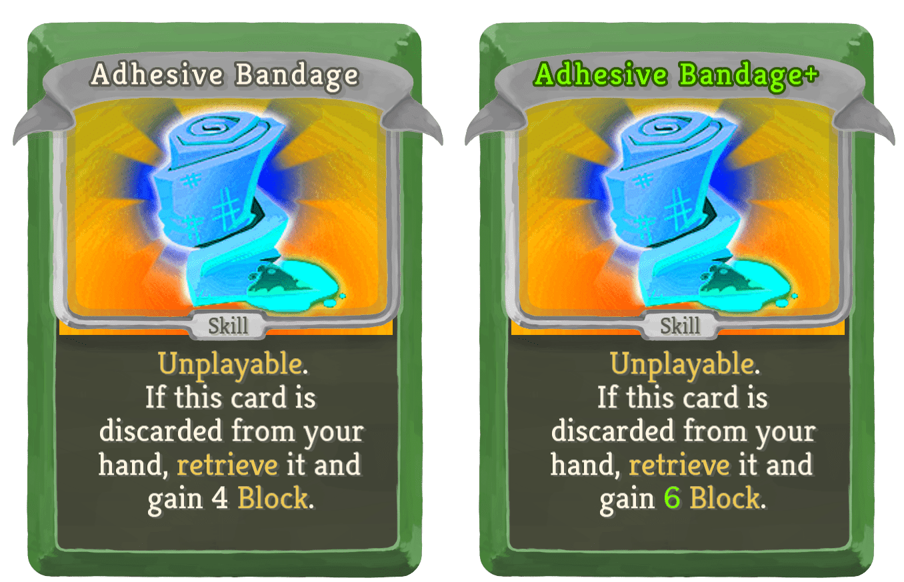 | Common | Skill | | Unplayable. If this card is discarded from your hand, retrieve it and gain 4 (6) Block. |
| Fourth Eye |  | Common | Skill | 1 | Gain 6 (9) Block. Track 3 (4). |
| Jump |  | Common | Skill | 0 | Discard 1 card. Retrieve it.(Discard it.) |
| Playing Safe | 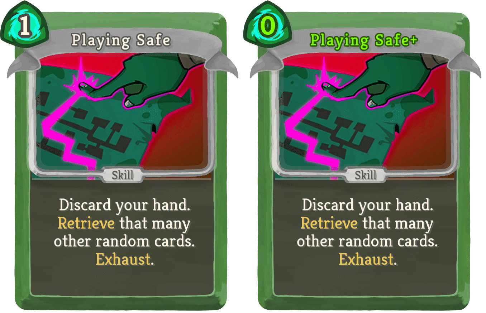 | Common | Skill | 1 (0) | Discard your hand. Retrieve that many other random cards. Exhaust. |
| Scavenge |  | Common | Skill | 1 | Draw 2 (3) cards. if you have an Unplayable card in your hand, exhaust 1 card. Exhaust. |
| Sleight of Hand |  | Common | Skill | 1 (0) | When you play this card, discard it. |
| Swiftness |  | Common | Skill | | Unplayable. If this card is discarded from your hand, retrieve it and add 2 (upgraded) Shivs to your hand. |
| Trace | 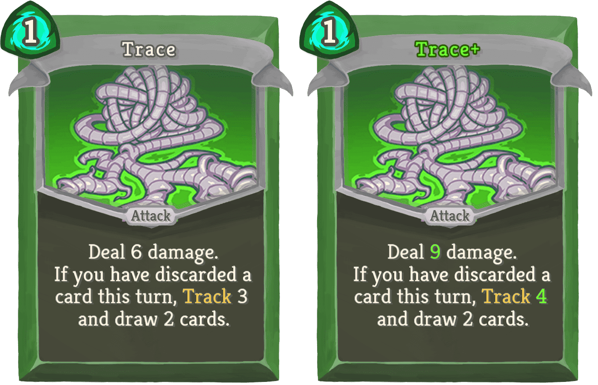 | Common | Attack | 1 | Deal 6 (9) damage. If you have discarded a card this turn, Track 3 (4) and draw 2 cards. |
| Venomologist | 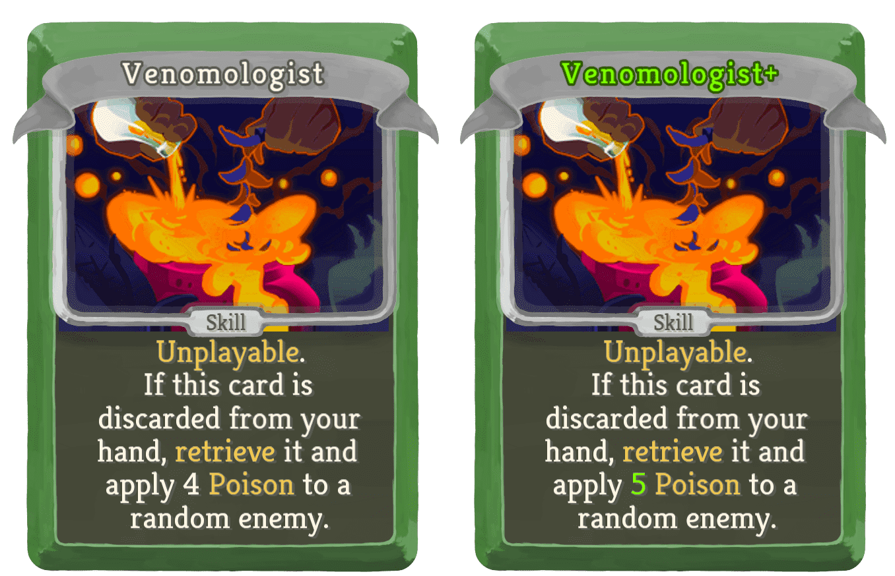 | Common | Skill | | Unplayable. If this card is discarded from your hand, retrieve it and apply 4 (5) Poison to a random enemy. |
| Acid Rain |  | Uncommon | Attack | 1 | Deal 4 (5) damage and apply 4 (5) Poison to a random enemy for each Unplayable card in your hand. |
| Balance |  | Uncommon | Skill | 1 | Draw 2 cards. Discard them. Retrieve them. Exhaust. (not Exhaust.) |
| Blink |  | Uncommon | Skill | 1 | Gain 12 (16) Block. Discard 1 card at random. |
| Clarity |  | Uncommon | Skill | 1 | Gain 6 (10) Block. If you have discarded a card this turn, retrieve 2 cards. |
| Evade |  | Uncommon | Skill | 1 (0) | Gain 3 Block for each card in your hand. Discard your hand. |
| Juggle | 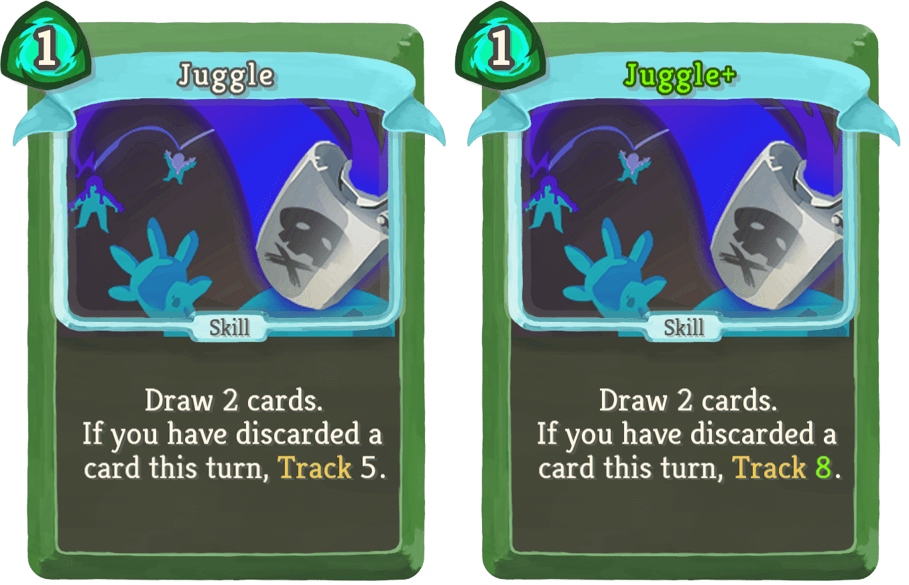 | Uncommon | Skill | 1 | Draw 2 cards. If you have discarded a card this turn, Track 5 (8). |
| Mind Games |  | Uncommon | Power | 0 | (Innate.)Whenever you draw an Unplayable (#yUnplayable) card, give it Retain this combat. |
| Recall | 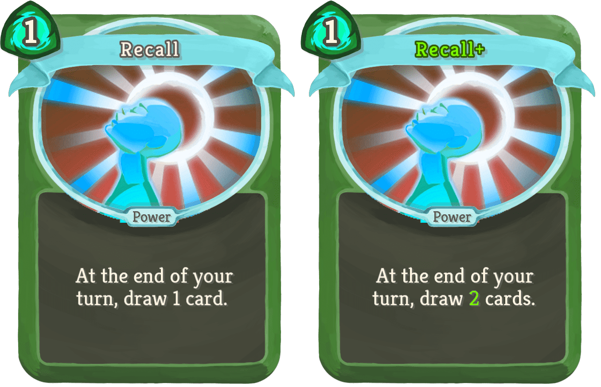 | Uncommon | Power | 1 | At the end of your turn, draw 1 (2) card(s). |
| Roll |  | Uncommon | Power | 1 (0) | At the start of your turn, discard 1 random card. |
| Shuffle |  | Uncommon | Skill | | Unplayable. If this card is discarded from your hand, retrieve another random (the bottom) card from (of) your discard pile. |
| Sprint |  | Uncommon | Skill | 0 | Draw a card for each Unplayable card in your hand. Exhaust. (not Exhaust.) |
| Stopwatch | 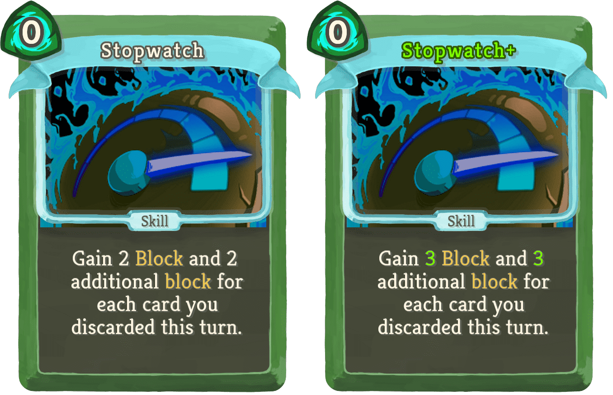 | Uncommon | Skill | 0 | Gain 2 (3) Block and 2 (3) additional block for each card you discarded this turn. |
| Toxin |  | Uncommon | Skill | 3 | Draw 3 (4) cards. Gain [G] for each Unplayable card drawn. |
| Train |  | Uncommon | Power | 1 | (Innate.)At the start of your turn, add 1 random Unplayable card to your hand. |
| Blade Shield | 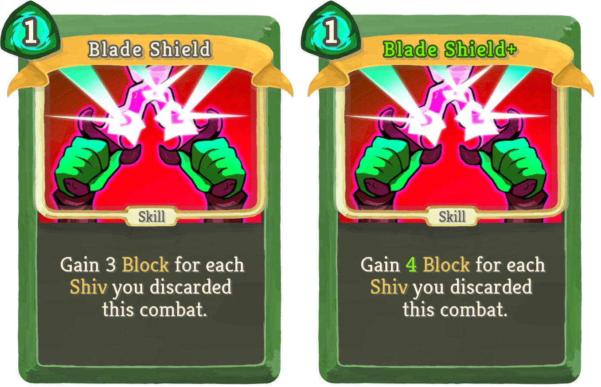 | Rare | Skill | 1 | Gain 3 (4) Block for each Shiv you discarded this combat. |
| Contemplate |  | Rare | Skill | 1 | Track 4 (6). Selected cards cost 0 this turn. |
| Discard King | 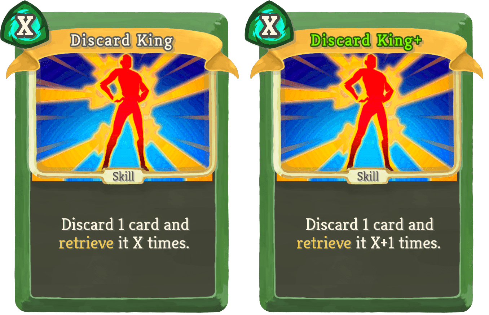 | Rare | Skill | X | Discard 1 card and retrieve it X (X+1) times. |
| Entomb |  | Rare | Skill | 3 (2) | Choose a card. Exhaust it to add a Shadow of it to your hand. Exhaust. |
| Fireworks |  | Rare | Attack | 0 | Can only be played if you have 5 or more Unplayable cards in your hand. Deal 25 (35) damage to all enemies 6 times. Take an extra turn. |
| Flash | 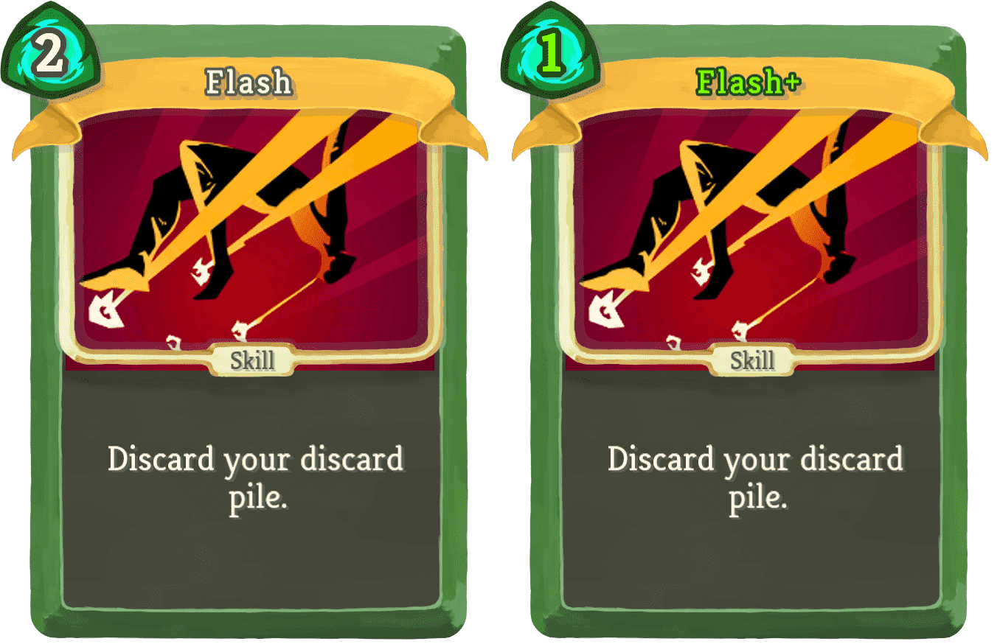 | Rare | Skill | 2 (1) | Discard your discard pile. |
| Phantom |  | Rare | Skill | | Unplayable. When you draw this, trigger discard effects on all of your cards, (and) lose [G], and exhaust this card (not, and exhaust this card). |
| Poison Needle | 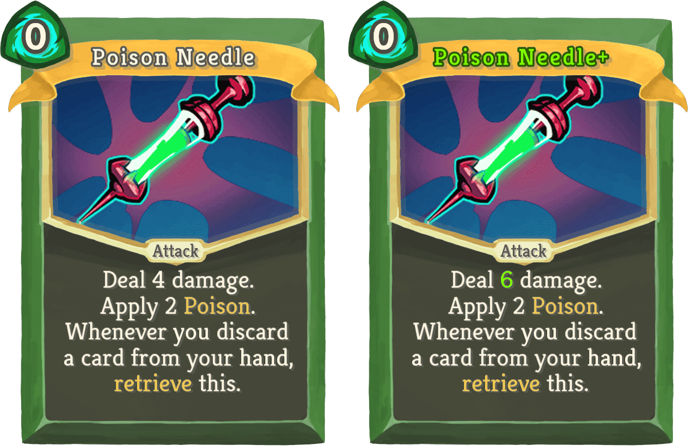 | Rare | Attack | 0 | Deal 4 (6) damage. Apply 2 Poison. Whenever you discard a card from your hand, retrieve this. |
| Revise |  | Rare | Skill | 0 | Track 4 (10) . Exhaust selected cards. Exhaust. |
| The Wheel |  | Rare | Skill | 2 (1) | Draw 5 cards. Discard 5 cards. |
| Twilight | 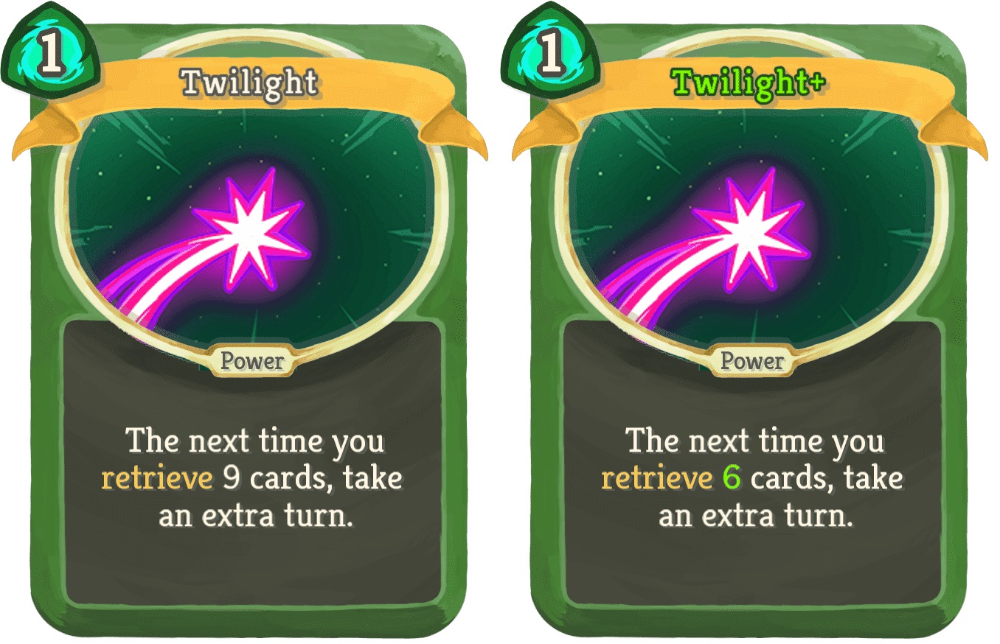 | Rare | Power | 1 | The next time you retrieve 9 (6) cards, take an extra turn. |
{kind=link}
{kind=link}
{kind=link}
{kind=link}
{kind=link}
{kind=link}
{kind=link}
{kind=link}
{kind=link}
{kind=link}
{kind=link}
{kind=link}